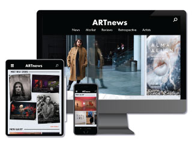

ARTNEWS REDESIGN

OVERVIEW
This was project for UI Design. The goal was to redesign an article site and include 15 microinteractions across all 3 platforms: mobile, tablet, and desktop.
This was project for UI Design. The goal was to redesign an article site and include 15 microinteractions across all 3 platforms: mobile, tablet, and desktop.